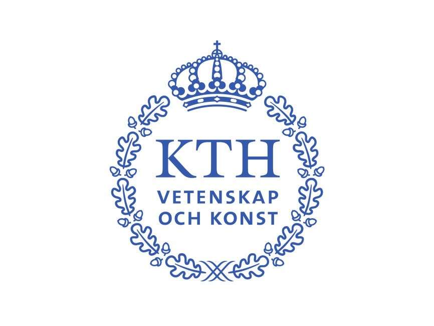
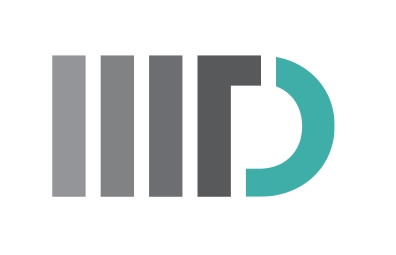

Collaborative Robotics
Quality-of-control-aware communication and compute allocation for robot teams operating under latency and reliability constraints.
Wireless communications · networked robotics · edge computing
I am a doctoral student at KTH Royal Institute of Technology working on control-communication co-design for collaborative and networked robotic systems.
My research connects wireless systems, robotics, and machine learning, with recent work on quality-of-control-aware resource dimensioning, trustworthy edge computing, semantic communications, and digital-twin-driven multi-robot systems.
Current Focus
Quality-of-control-aware communication and compute allocation for robot teams operating under latency and reliability constraints.
Benchmarking and experimental infrastructure for edge-native control applications, reproducibility, and Private 5G deployments.
Learning-based communication pipelines for vehicular telemetry and networked autonomy where transmitted meaning matters.
Recent News
Modeling and Validation of Quality of Control for Edge-Offloaded Collaborative Navigation was accepted at IEEE VTC2026-Fall.
Received a scholarship from Styffes stiftelse to attend MobiSys 2026.
Awarded the Glödlampfabrikernas stipendiefond (Light Bulb Manufacturer's scholarship) to attend IEEE INFOCOM 2026 in Tokyo, Japan.
Selected Work
Profile

Doctoral student at KTH Royal Institute of Technology, Department of Information Science and Engineering.
M.Sc. Information and Network Engineering (2022). Master's thesis on evaluation of scheduling policies for XR applications.

B.Tech. in Electronics and Communication Engineering (2020) and undergraduate research in robotics and wireless systems.